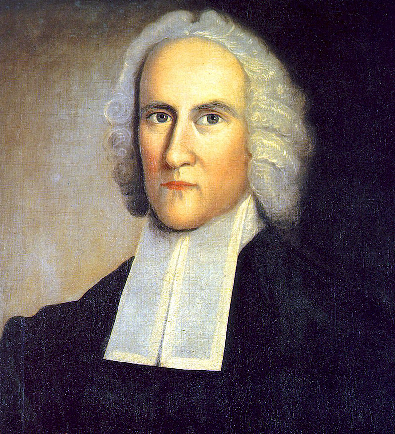

Jonathan Edwards (theologian) - Source Wiki
Jonathan Edwards was a revivalist preacher, philosopher, and Congregationalist Protestant theologian. Like most of the Puritans, he held to the Reformed theology.
Edwards is widely regarded as "one of America's most important and original philosophical theologians".
Read more about Jonathan Edwards